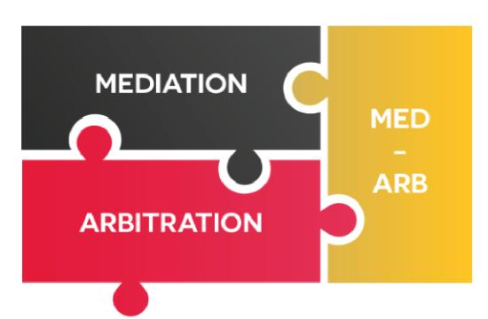
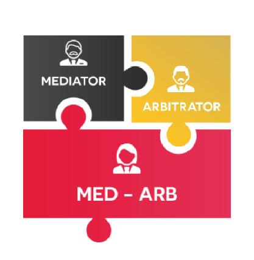
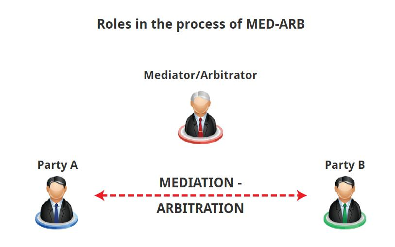

MED-ARB
Questions: Select the answer you consider to be correct and then to check your response at the end of this chapter.
Q1:Why is MED-ARB sometimes more appropriate than simple mediation or arbitration? (为什么 MED-ARB 有时比简单的调解或仲裁更合适？)
(1)Mediation may not be able to resolve all the issues between the parties. (调解未必能解决当事人之间的所有问题。)
(2)MED-ARB limits the scope of arbitration solely to the intractable disputes. (MED - ARB将仲裁范围局限于难以解决的争议)
(3)MED-ARB combines the “consensuality” of mediation with the “finality” of arbitration. (MED - ARB将调解的 “共识性”与仲裁的“终局性”相结合)
(4)All of these. (所有这些)
A1: The correct answer is ‘All of these’.
(MED-ARB ‘recognises that mediation may not resolve all the issues between the parties but limits the arbitration solely to the intractable disputes, thereby bringing a cost and time saving to the parties’. MED-ARB“承认调解可能无法解决双方之间的所有问题，而将仲裁仅限于棘手的争议，从而为双方节省了成本和时间。” )
Q2: Which of the following is central criticism of MED-ARB? (以下哪项是对MED-ARB的主要批评?)
(1)There are very few individuals who are capable of acting as both mediator and arbitrator. (能同时担任调解员和仲裁员的人很少)
(2)The parties withhold information at the mediation stage for fear that it will be used against them during arbitration. (当事人在调解阶段隐瞒信息，以免在仲裁期间被用来对自己不利。)
(3)MED-ARB is far more expensive that simple mediation or arbitration alone. (med - arb比单纯的调解或仲裁要昂贵得多)
(4)All of these. (所有这些)
A2: The Correct answer is ‘The parties withhold information at the mediation stage for fear that it will be used against them during arbitration.’
(Critics have argued that MED-ARB ‘does not encourage parties to be honest about their situation’ due to a fear that confidential information disclosed in good faith could ultimately be used against them in the arbitration stage. 批评者认为，由于担心善意披露的机密信息最终可能在仲裁阶段被用来对他们不利，MED-ARB“不鼓励当事人诚实地对待他们的情况” )
Q3: Why has ARB-MED been suggested as an alternative? (为什么推荐ARB-MED作为替代方案?)
(1)To ensure the arbitration’s impartiality. (保证仲裁的公正性)
(2)To reduce time and cost. (减少时间和成本)
(3)Because mediation may no longer be necessary after the arbitration process is completed. (仲裁程序结束后，可能不再需要调解)
(4)All of these. (所有这些)
A3: The correct answer is ‘to ensure the arbitration’s impartiality.’
(Since each of the countries (more than 150) that have adopted the New York Convention on the Recognition and Enforcement of Foreign Arbitral Awards have agreed to ‘recognise awards from other states as binding and enforce them in accordance with their rules of procedure’, parties can have confidence that their awards will be enforced almost anywhere in the world. 由于已通过《承认和执行外国仲裁裁决纽约公约》的每一个国家(超过150个)都同意“承认其他国家的裁决具有约束力，并按照其程序规则执行”，当事人可以确信他们的裁决将在世界上几乎任何地方得到执行。)
What is the aim of this module?
Understanding how the processes of MED-ARB and ARB-MED work and what the outcomes of these mechanisms are. (了解MED-ARB和ARB-MED的作用过程以及这些机制的结果。)
MED-ARB is a hybrid process which combines the use of both mediation and arbitration. (MED-ARB是一种混合程序，结合了调解和仲裁的使用)
While it is unclear when MED-ARB first began to be practiced, there is evidence that it was in use as early as 1911 when an American factory employed a ‘mediator who was vested with the reserved power to render a final and binding decision’ in its labour disputes. (虽然不清楚MED-ARB最早是何时开始实施的，但有证据表明，它早在1911年就开始使用了，当时一家美国工厂雇佣了一名 “被赋予保留权力的调解员，以在其劳资纠纷中做出最终和有约束力的决定”)
MED-ARB ‘recognises that mediation may not resolve all the issues between the parties but limits the arbitration solely to the intractable disputes, thereby bringing a cost and time saving to the parties. If no agreement… is reached, the mediator will then change roles and become an arbitrator empowered to impose a binding decision on the parties since he or she will already be well-acquainted with the facts and does not have the same learning curve as an appointee coming fresh to the dispute.’ (MED-ARB认识调解可能无法解决双方之间的所有问题，而将仲裁仅限于棘手的争议，从而为双方节省了成本和时间。如果没有达成协议，调解员将改变角色，成为一名仲裁员，有权对当事人施加有约束力的决定，因为他或她已经非常熟悉事实，不像刚被任命的人那样有学习曲线)
Critics have argued that MED-ARB ‘does not encourage parties to be honest about their situation’ due to a fear that confidential information disclosed in good faith could ultimately be used against them in the arbitration stage. (批评者认为，MED-ARB“不鼓励当事人诚实地说明自己的情况”，因为担心善意披露的机密信息最终可能会在仲裁阶段被用来对他们不利)
In response to this, however, others have asserted that the parties ‘are not fooled by the fact that they know that the med-arbiter has the authority to make the decision if the parties fail to work out their own arrangement… It is precisely that knowledge … that is the incentive for the parties to reach their own agreement’. (然而，针对这一点，其他人则断言，当事人“不会被他们知道的事实所欺骗，即如果当事人未能达成自己的安排，仲裁者有权做出决定……正是这种知识……激励了当事人达成自己的协议”)
To overcome this criticism, some have started to reverse the process by turning it into ARB-MED. (为了克服这种批评，一些人已经开始逆转这一进程，把它变成ARB-MED)
It has been suggested that ‘the most effective way to disarm a possible challenge to one’s ability to maintain impartiality is to switch the order of those functions’ by having the arbitrator prepare a final award before informing ‘the parties that he was now fully vacated of his duties and office as an arbitrator and that they both agreed, he would be prepared to attempt to mediate the dispute between them’. (有人建议, “要消除对一个人保持公正的能力的潜在挑战，最有效的方法就是改变这些职能的顺序”, 在通知 “当事各方，他现在已经完全卸下了仲裁员的职责和职务，并且双方都同意，他将准备尝试调解他们之间的纠纷” 之前, 通过让仲裁员准备最终裁决)
Since ‘neither party wants to see what the award envelope contains’ the matter will often be successfully mediated. If the parties are not able to resolve their dispute during the mediation phase, however, ‘the decision of the neutral third party, made in the arbitration, is released… and they are bound’ by it. (由于 “双方都不想看到信封里装的是什么” ，这件事往往会成功调解。然而，如果双方在调解阶段无法解决争议， “中立第三方在仲裁中做出的决定将被公布……双方都受其约束” 。)
Another way of conducting MED-ARB or ARB-MED ‘involves different neutrals fulfilling the roles of mediator and arbitrator since the feature that has attracted the most criticism is having both roles played by the same person.’ ( 进行MED-ARB或ARB-MED的另一种方式“涉及不同的中立者履行调解员和仲裁员的角色，因为引起最多批评的特征是由同一个人扮演这两个角色。”)
When the parties’ desire a private method of dispute resolution combining the ‘consensuality’ of mediation with the ‘finality’ of arbitration, MED-ARB is both a logical and appropriate choice. (当当事人希望有一种私人的争议解决方法，将调解的 “共识性” 与仲裁的“终局性”相结合时，MED-ARB是一个合乎逻辑且适当的选择。)
 MED-ARB is a hybrid process which combines the use of both mediation and arbitration.(MED-ARB 是一个结合了调解和仲裁的混合流程)